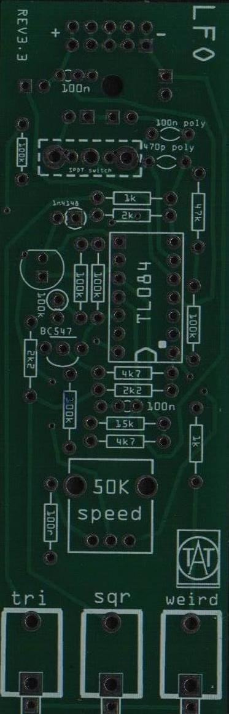
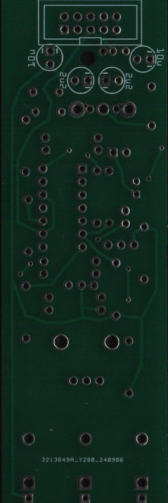
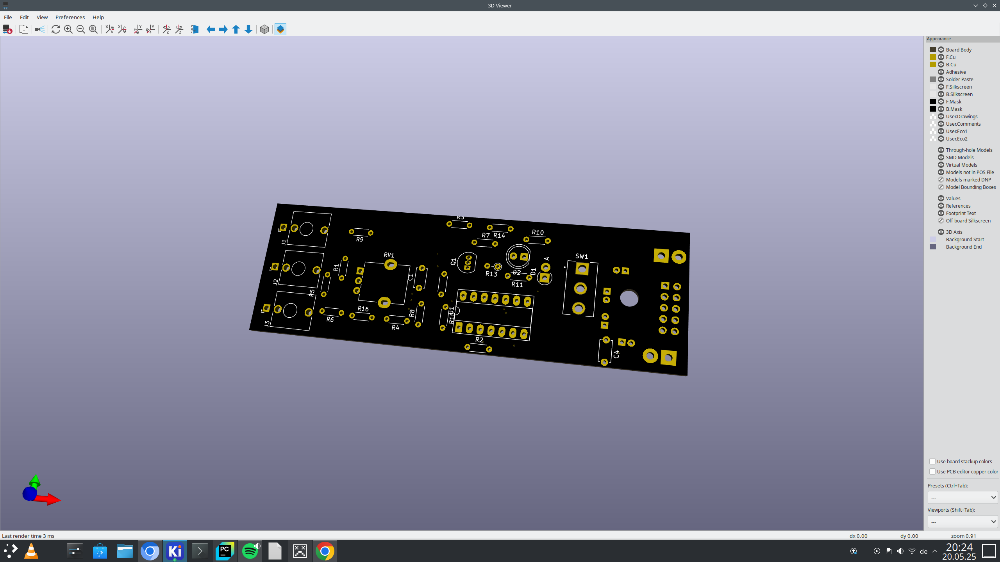
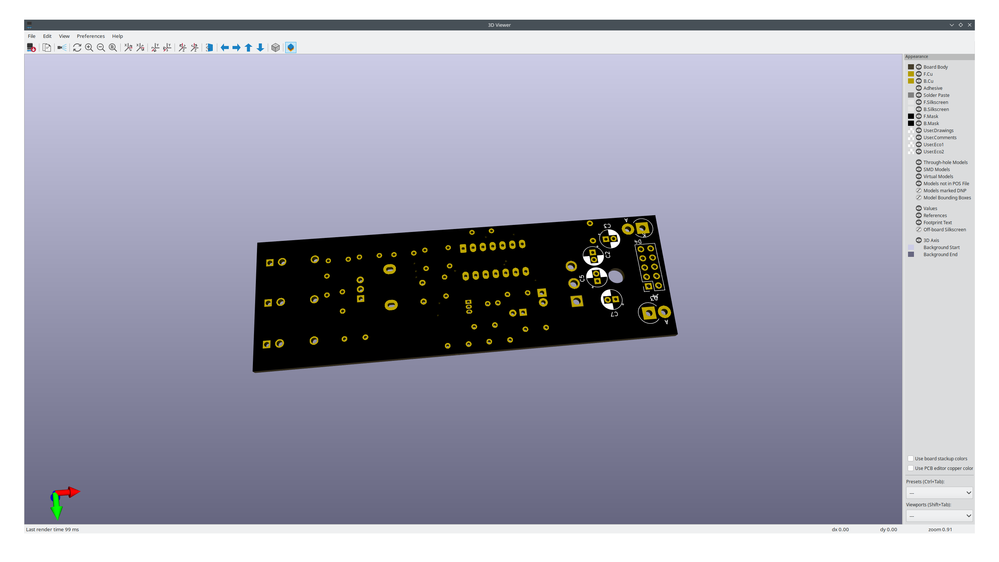

Hello folks,
today I want to continue the series about simulation of synth modules with LTspice.
We start with this module from etsy which we disect and reverse engineer, so that we can build it with reverse polarity protection diodes…
We want to analyze this module.
Lets start with the pcbs:
 |
 |
To begin with, we first want to reversse enginnering the two sides of the pcb, to build another pcb, with reverse polarity protection diodes in the mind, following the schematic in LTSpice: Also here is the download link for the LTSpice file:
First of all here the link to this ModWiggler-Forum post which helped me to realize this idea and proofread my reverse engineered circuit, without Synthiq I could not have made it.


 |
 |
(To bes continued, when the ordered PCBs arrive)
And here the iBoM: iBoM
bom:
"Reference","Value","Footprint","Datasheet","Qty","DNP","Exclude from BOM","Exclude from Board" "C1,C4","100nFC","Capacitor_THT:C_Disc_D4.7mm_W2.5mm_P5.00mm","~","2","","","" "C2,C5","2.2µFC_Polarized","Capacitor_THT:CP_Radial_D5.0mm_P2.00mm","~","2","","","" "C3,C7","10µFC_Polarized","Capacitor_THT:CP_Radial_D5.0mm_P2.00mm","~","2","","","" "C8","470pFC","Capacitor_THT:C_Disc_D9.0mm_W2.5mm_P5.00mm","~","1","","","" "D1","1N4148","Diode_THT:D_DO-41_SOD81_P2.54mm_Vertical_AnodeUp","https://assets.nexperia.com/documents/data-sheet/1N4148_1N4448.pdf","1","","","" "D2","LED","LED_THT:LED_D5.0mm","~","1","","","" "D3","1N5817","Diode_THT:D_DO-201AD_P3.81mm_Vertical_AnodeUp","http://www.vishay.com/docs/88525/1n5817.pdf","1","","","" "D4","1N5817","Diode_THT:D_DO-41_SOD81_P10.16mm_Horizontal","http://www.vishay.com/docs/88525/1n5817.pdf","1","","","" "J1","PJ398SM-12 (Tri)","Connector_Audio:Jack_3.5mm_QingPu_WQP-PJ398SM_Vertical_CircularHoles","","1","","","" "J2","PJ398SM-12 (square)","Connector_Audio:Jack_3.5mm_QingPu_WQP-PJ398SM_Vertical_CircularHoles","","1","","","" "J3","PJ398SM-12 (weird)","Connector_Audio:Jack_3.5mm_QingPu_WQP-PJ398SM_Vertical_CircularHoles","","1","","","" "J4","Conn_02x05_Odd_Even","Connector_PinSocket_2.54mm:PinSocket_2x05_P2.54mm_Vertical","~","1","","","" "Q1","BC547","Package_TO_SOT_THT:TO-92_Inline","https://www.onsemi.com/pub/Collateral/BC550-D.pdf","1","","","" "R1","100R","Resistor_THT:R_Axial_DIN0204_L3.6mm_D1.6mm_P5.08mm_Horizontal","~","1","","","" "R2,R4,R7","2.2kR","Resistor_THT:R_Axial_DIN0204_L3.6mm_D1.6mm_P5.08mm_Horizontal","~","3","","","" "R3,R5","4.7kR","Resistor_THT:R_Axial_DIN0204_L3.6mm_D1.6mm_P5.08mm_Horizontal","~","2","","","" "R6,R9","1kR","Resistor_THT:R_Axial_DIN0204_L3.6mm_D1.6mm_P5.08mm_Horizontal","~","2","","","" "R8","15kR","Resistor_THT:R_Axial_DIN0204_L3.6mm_D1.6mm_P5.08mm_Horizontal","~","1","","","" "R10,R11,R14,R15,R16","100kR","Resistor_THT:R_Axial_DIN0204_L3.6mm_D1.6mm_P5.08mm_Horizontal","~","5","","","" "R12","47kR","Resistor_THT:R_Axial_DIN0204_L3.6mm_D1.6mm_P5.08mm_Horizontal","~","1","","","" "R13","100kR","Resistor_THT:R_Axial_DIN0204_L3.6mm_D1.6mm_P2.54mm_Vertical","~","1","","","" "RV1","R_Potentiometer","Potentiometer_THT:Potentiometer_Alpha_RD901F-40-00D_Single_Vertical","~","1","","","" "SW1","SW_SPDT","100SP1T1B4M2QE:SW_100SP1T1B4M2QE","~","1","","","" "U1","TL084","Package_DIP:DIP-14_W7.62mm_Socket_LongPads","http://www.ti.com/lit/ds/symlink/tl081.pdf","1","","",""